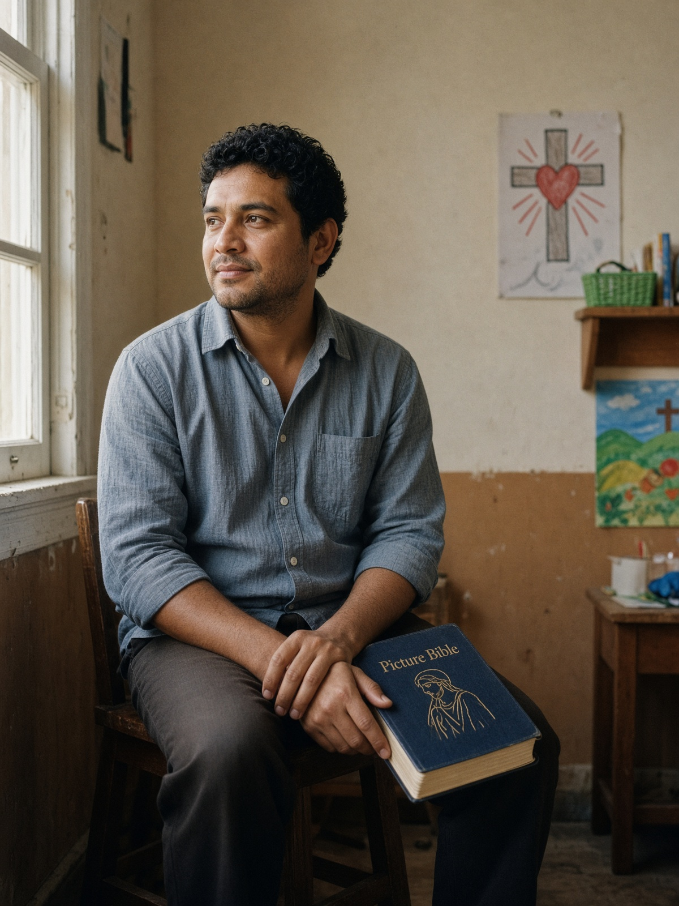
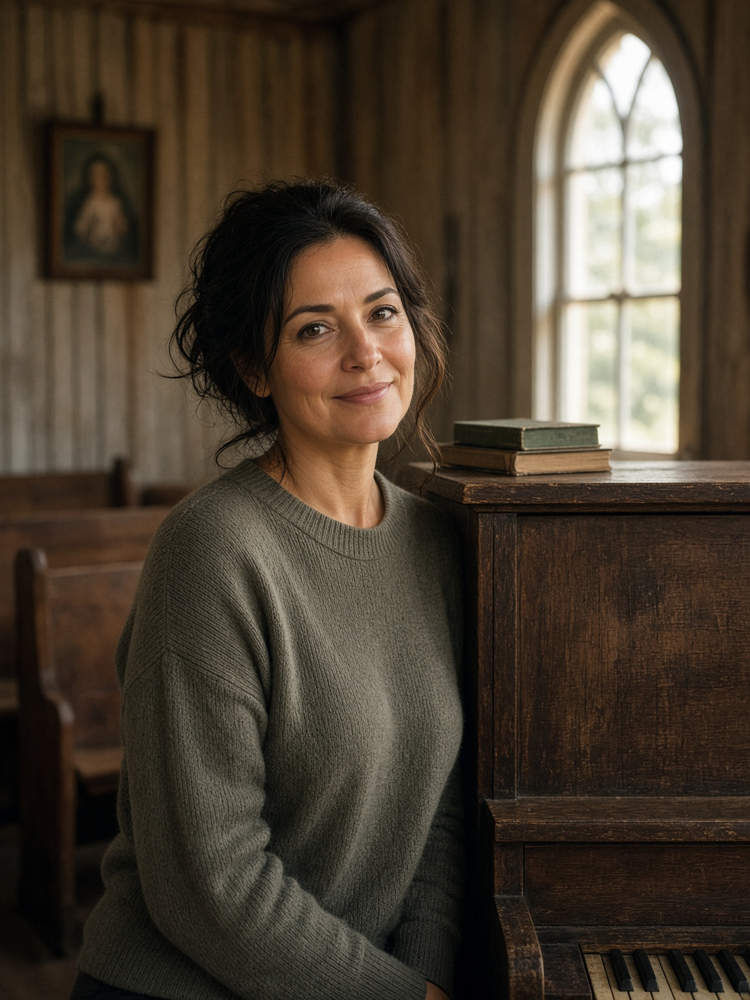
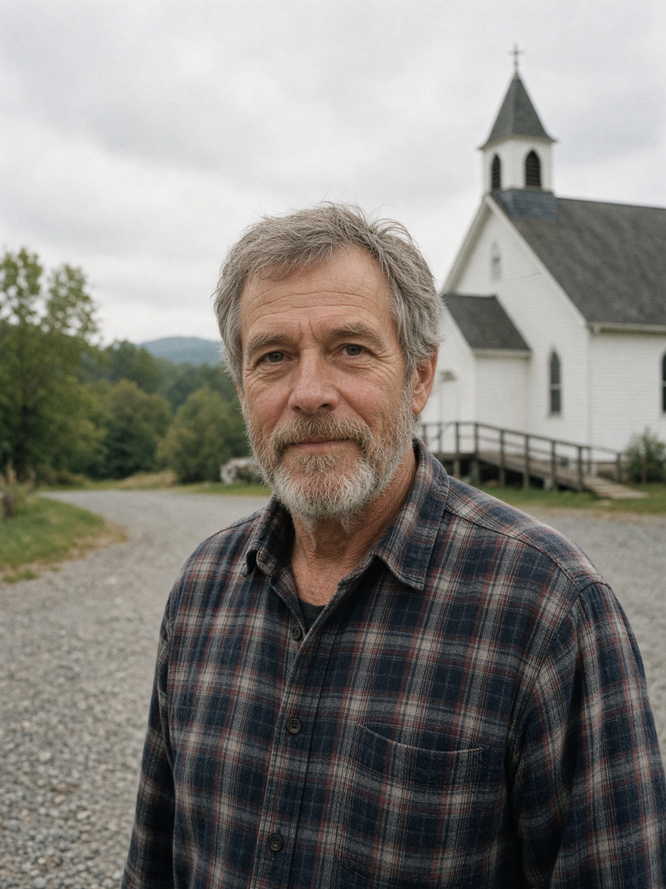

About
A church for this road
TCC is a vibrant non-denominational church dedicated to sharing the love of God with everyone. We welcome individuals from all walks of life, regardless of their background, culture, or spiritual journey.
Our story
People have prayed in this little stretch of Williamson County for a long time. The brick church with the white steeple on Nolensville Road has been a house of worship for this community for many years. After the former congregation closed, neighbors still wanted a church that felt like home. Triune Community Church gathered to keep Sunday open on this road — not as a brand, and not as a show, but as a family that sings, reads the Bible, and looks after one another. We are new in some ways and old in others. We do not have a campus. We have a building, a lawn, and a hope that Jesus meets people here.

What non-denominational means here
Non-denominational here means we are not owned by a larger church body. We make decisions among the people who gather. We still love the wider church, and we still hold to the old Christian faith. We just live it as a local family on this road. You do not need a membership card to sit with us on Sunday.
What we believe
This is our public faith in a few sentences. It is not a test at the door.
- 1.
We believe there is one God — Father, Son, and Holy Spirit.
- 2.
We believe Jesus is God with us, who lived, died, and rose again to bring us home to God.
- 3.
We believe the Bible is God’s word and a sure guide for faith and ordinary life.
- 4.
We believe every person is made in God’s image, and that all of us need mercy.
- 5.
We believe grace is a gift. We cannot earn our way to God.
- 6.
We believe the church is a family of people learning to follow Jesus together.
- 7.
We believe baptism and the Lord’s Table are gifts Jesus gave his people.
- 8.
We believe prayer is how we talk with God, in church and at the kitchen table.
- 9.
We believe faith shows up in quiet love for neighbors, including the poor and the stranger.
- 10.
We believe Jesus will make all things new, and that hope is not a slogan.
Staff
First names only here. We add our own photos as we have them. Please write info@triunecommunitychurch.com if you need someone — we will not post cell numbers.
Anita
Pastor
Grand Poobah

Marcus
Kids
Marcus helps little ones feel at home while the rest of us listen.
Photo placeholder

Ruth
Music
Ruth leads our singing from the piano, not from a stage show.
Photo placeholder

James
Office & grounds
James keeps the building ready and answers the phone with care.
Photo placeholder